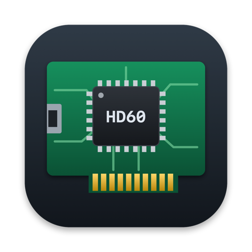

This is a driver and a player that make the Elgato Game Capture HD60 Pro work on an Apple Silicon Mac. The HD60 Pro is a PCIe HDMI capture card, and Elgato never released a macOS driver for it. The player shows whatever is plugged into the card's HDMI input live in a window, with sound, at 60 frames a second. It was worked out on the Mac, one step at a time, over two days in October 2026.
Why
I had the card, a Mac and a MiSTer FPGA to play through it, and no way to connect them. Elgato's driver is for Windows, and the card is a PCIe card, not a USB one, so it doesn't even plug into a Mac without help. My setup is a MacBook Air with the card in a Thunderbolt 3 PCIe enclosure, a Razer Core X. On a Mac that combination shows up in the system as a card with no driver, and nothing else happens. So I wrote one.
Starting from almost nothing
I wasn't the first to look inside this card. The card has its own small ARM computer on board, and the host talks to it by passing commands through a mailbox in the card's memory. Someone had already worked out that mailbox and the sequence for starting capture, and published a Linux driver for it. I ported what they found to Apple's DriverKit, which is how drivers are written on a modern Mac, and checked each claim against Elgato's own Windows driver to make sure it held up. No Elgato code or firmware is in my project, and the credits are below.
How it went
The development log is long, because every step had to be proved on real hardware. These were the turning points.
- First contact. The driver loaded, found the card and got an answer from its processor. That told me the card was running its own firmware, version 1.11, and that I should never upload the older version in Elgato's Windows installer.
- Telling the card where to put things. The card writes video into memory it has been given. Registering around 64 MB of buffers through the mailbox worked first time.
- Signal lock. The chip that receives HDMI was held in reset. Releasing it needed a sequence ported from the Linux driver, plus one change for this card: a pin that had to be driven the opposite way round. Then the MiSTer locked straight away as 720p60.
- First video frames. No frames came until I added a final step after lock, which switches the receiver to the sync mode the card wants. After that whole frames landed at exactly the addresses I had registered.
- First picture. A still image of the MiSTer's screensaver appeared, grey noise with a gradient. It was the right picture, and I confirmed it by eye. The same session taught me that the card has to stay allowed to write to memory for the whole capture, or the Thunderbolt link falls over.
- Live video. The card was producing a single frame and then going quiet. The fix was to hand each finished buffer back to the card, which tells it to keep going. From then on the video held a steady 60 frames a second, decoded by the Mac's own hardware.
- Sound. Audio needed the right settings word and its own set of buffers. Once those were in place the Mac played the MiSTer's sound.
- The smearing was the encoder. Motion looked blurred and speckled, and I spent a while suspecting my own code. It was the card's compression setting. At the Windows default, text had halos around it. At a much finer setting the picture is crisp at 7 to 9 Mbit/s, so the player now defaults to that and backs off by itself when a picture gets too busy for the encoder.
- Interrupts and tidying. The driver now waits to be told when a frame is ready instead of constantly asking, which cut its wake-ups from about 600 a second to about 160. A deadlock turned up after a source rebooted, was fixed, and the player now recovers by itself if the picture stops.
The pieces

There is also a small diagnostics tool for reading the HDMI receiver's state, which was invaluable while working out why a picture wasn't there.
What works, and what doesn't
- Live picture and sound from progressive HDMI sources, from 480p to 1080p. I've tested 720p60 and 1080p60, with the MiSTer as the source.
- Interlaced sources aren't supported.
- Very busy, noisy pictures can overwhelm the card's encoder at 1080p. Real content, such as games, is fine.
- It has only been run on my one setup. A different Mac, enclosure or revision of the card might behave differently, and I haven't measured latency formally.
A security trade-off
Apple decides which developers may write this kind of driver, and it hands out the permissions on request. I haven't got them, so for now the driver only runs with the Mac's System Integrity Protection switched off and some of its entitlement checks relaxed. That's a real reduction in the Mac's security, fine on a test machine and not something to do casually. I've drafted a request to Apple for the proper entitlements, which would let it run with everything switched back on. Until then, it's a project for people who are comfortable with that.
Get a copy
The code is in a private repository for now. If you have an HD60 Pro and would like to try it, or just want to talk about how it works, use Reach out in the menu and I'll send you a copy. The setup guide and the full development notes come with it.
Credits and the small print
The driver is built on the reverse-engineering work in Wolffyx's HD60 Pro Linux driver, and through it on Steven Toth's hdcapm, which describes the video receiver chip. Because of that, my project is released under the GPL (version 2 or later), the same family of licence. I also checked behaviour against Elgato's Windows driver for interoperability. Nothing from Elgato is included in the project.
This is a personal project. Elgato, Game Capture and HD60 are trademarks of their owners, and I'm not affiliated with or endorsed by Elgato.